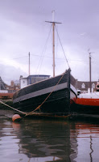
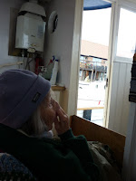
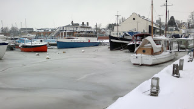

 |
| Goldenray |
{kind=link}
"Our Baby" -- alias my youngest niece Louisa-- is one year old and growing up bi-lingual. She isn’t being taught two languages: she is learning them. It’s a joy to hear her mother talking intimately and privately to her in the
fondest German while Louisa is simultaneously absorbing English from the world around her. Mum loves Louisa and communicates effortlessly through songs and funny faces and strange gruff voices. (Language number three?) Unfortunately, as she isn't able to do any other protective or nurturing actions, she has become convinced that none of the rest of us have any competence to keep Our Baby safe. Her own words are slipping from her: no wonder she feels desperate to protect Louisa from being compulsorily confronted with two adult languages at once.
I did all that I could on the reasoning'n'reassurance front but I don't think I convinced her. I wished she hadn't remembered that
when we had written out "Baa Baa Black Sheep" to send to Louisa a few days earlier we had
changed the little boy who lives down the lane to a little girl. At the time it felt like a neat little piece of
personalisation and we had a good laugh. Today mum is horrified. “But that’s
a historic English poem, Jul. We can’t just change the words!”
 |
| View from the wheelhouse |
{kind=link}
The things that she remembers are often more problematic than the things she forgets. So, before the kultur-poliz come banging on the door, I shove some emergency rations into a bag and suggest we set out for a walk.
She’s not feeling well, poor mum, but she drags along bravely. When I suggest we give up and turn back she says she’ll “just do as she’s told” – definitely a bad sign. I make her carry on and wonder what I’ll do if she has a heart attack here on the river-wall. Finally we reach Goldenray, the old Scottish fishing boat that’s coming apart at the seams almost as quickly as she is. “My special place,” says Mum, with the first real smile of the day smoothing the deepest lines away from her face. She was grey with worry earlier. Now normal skin tone has returned.
Her
favourite lookout point from the foredeck is too cold and wet today (even by my standards) but with a hot
water bottle and several rugs we can have the side door open and she can get
comfy in a folding chair and watch people walking past on
the other side of the Ferry Dock and make up stories about them - where they're going and what they've forgotten and whether they are going to miss the train. There aren't very many promenaders today but the seagulls make good stand-ins and someone’s left a wet flag fluttering. Her creativity doesn’t need much. She decides they're having a party. (I happen to know they're prayer flags and were put up weeks ago after the Nepal earthquakes but I keep that to myself.)
So she's happy and I pull
out my exercise book. It's all I have with me as I've left the typescript of Margery Allingham’s The Relay back in Mum's flat. That's what I'd been planning to blog about. The Relay is Allingham's unpublished response to the time in her life (mid-1950s) when she and
her sister Joyce found themselves responsible for their mother and their aunt
and an elderly cousin. The cousin had dementia, the aunt had suffered a stroke
and their mother wasn’t really “safe with people”. Margery had a gift for the
killer phrase and that’s one of many that I regularly summon up for my private relief.
| Margery Allingham with her aunt and grandmother |
{kind=link}
The Relay didn't find a market in her lifetime and perhaps it doesn't have one now -- but I'm not sure. Its specifics are out of date but the problems haven't changed. She writes about family dynamics and finance and where old people should live. That's the hard one: how to make a home that is emotionally as well as physically sheltering. If, for whatever reason, you don't move your relation into your own home, what do you do?
Mum lives in a "very sheltered" flat in the town where she came when she was married, near the river that she loves As a family we have done our best to fill Mum’s rooms with her most comforting things. She is safe and cared for; we try to ensure she’s never alone for too long. But it doesn’t always work. “My Home” she calls it in tones of utter scorn. "Once you're in one of these places you might as well give up," she was muttering earlier. For now, blessedly, on Goldenray, she is in “our place”. She looks along the line of unpretentious first-floor flats that perch above the workshops on the Ferry Quay. “I’m living in that end one at the moment,” she confides.
Good choice Mum. That was Frank Knights's flat. He was the Barnados boy who became a master shipwright. His spirit haunts this
place. I can remember standing exactly there, at the base of those steps, looking across the dock as he told me he remembered Mum arriving here with her own first boat. “That were sixty years ago. When she were
still June Scott.” He was pointing to a berth very close to where she and I are moored now in Goldenray. Invisible connections, shared scraps of knowledge, the handing-on process between generations.
Do you know, I think my blog about The Relay has been written after all.
Do you know, I think my blog about The Relay has been written after all.
 |
| Looking across the Ferry Dock (thanks for photo John Smith) |
{kind=link}